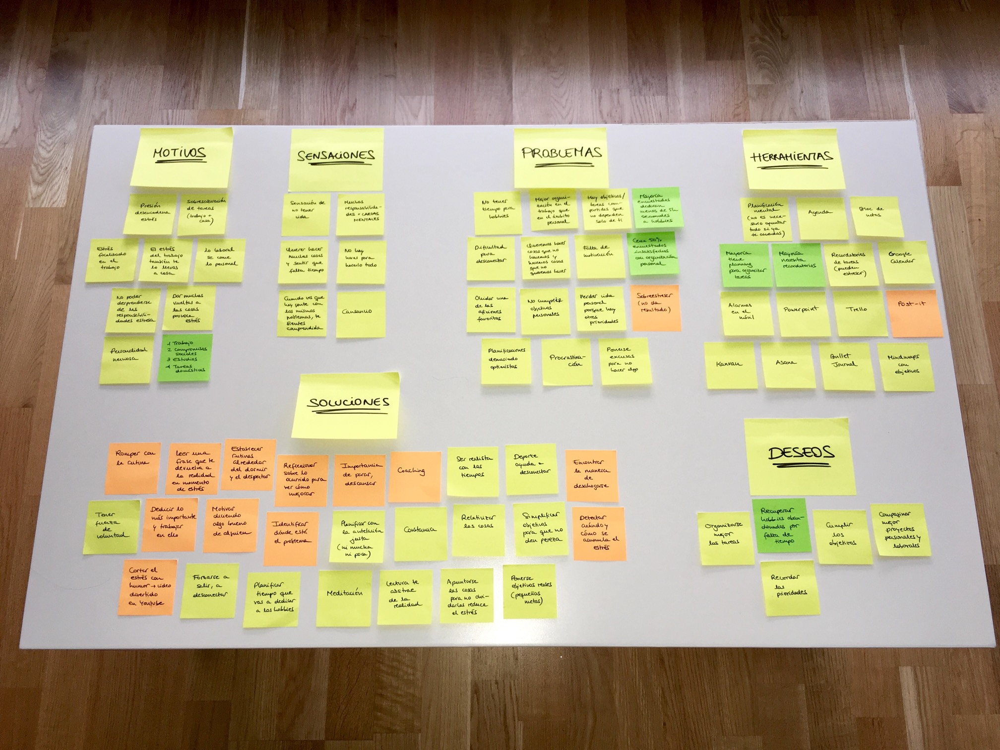
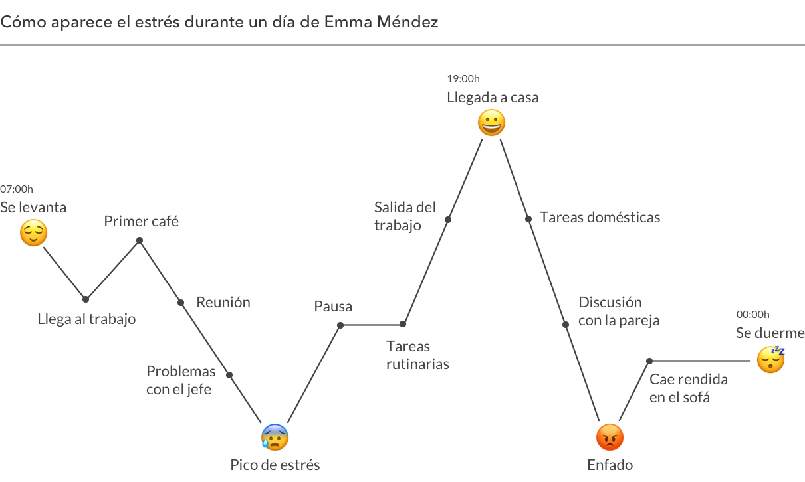
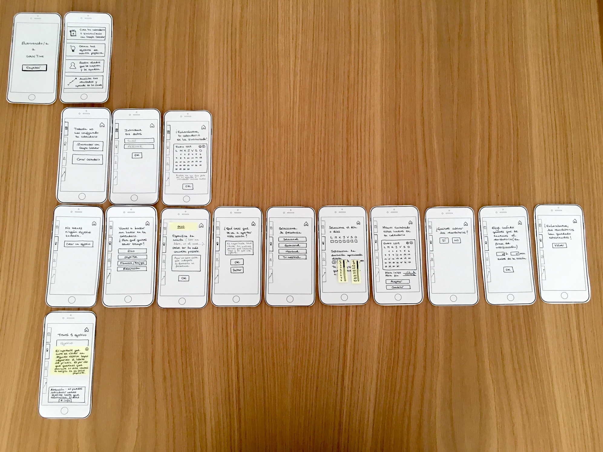

Diseño UX/UI de GainTime
Una app para disfrutar de los hobbies y reducir el estrés
Idea
GainTime es una aplicación para planificar y disfrutar de los hobbies, para encontrar tiempo para aquellas actividades que nos gustan y no estamos haciendo y, en definitiva, para desconectar del estrés diario.
User research
Mi punto de partida fue el estrés y con esa idea en la cabeza me pusé a investigar: hice una encuesta en la que participaron casi 100 personas en la que quise recoger datos cuantitativos que mostraran, entre otras cosas, cuáles son los principales causantes del estrés o cuáles son las actividades más elegidas para desconectar. Aquí encontrarás el informe completo.
Y también hice entrevistas, las cuales se pueden clasificar en tres perfiles:
- Personas ocupadas que me hablaron de su estrés.
- Líderes de equipos que me contaron su forma de organizar y motivar.
- Coaches y psicólogos que me explicaron cómo plantearse un propósito con éxito.
Affinity diagram
Con toda la información recogida en las encuestas y entrevistas creé el siguiente affinity diagram donde agrupé los conceptos más importantes en categorías. Esto me ayudó a tener una visión general de la problemática y a empezar a pensar en posibles soluciones.
User persona
User journey
Sin duda, elaborar el journey map me ayudó a empatizar con mi user persona y es aquí donde empecé a ver clara la solución. El estrés aparece a lo largo del día a causa de factores que muchas veces no podemos controlar y elaborando el user journey corroboré que lo que necesitaba Emma Méndez era tiempo para ella misma y para sus hobbies. Si después del trabajo, Emma hubiera dedicado un tiempo a hacer aquello que le gusta, seguramente su día no habría acabado tan mal.
Problem statement
Emma Méndez necesita agendar momentos de desconexión para recuperar hobbies abandonados y reducir su estrés.
En las encuestas iniciales un 90% respondió que tenían hobbies que no hacían por falta de tiempo pero, en este sentido, los expertos apuntan que muchas veces el problema no radica en una falta de tiempo, sino en que no definimos ni priorizamos lo que queremos hacer.
Solución
GainTime busca automáticamente huecos disponibles en el calendario para agendar los hobbies gracias a la sincronización con Google Calendar y Outlook. Así, los usuarios tendrán siempre presente a qué quieren destinar su tiempo libre y cuáles son sus motivaciones. Porque si tienen claro que se han hecho un propósito, les será más fácil conseguirlo.
Wireframes
Si comparamos los primeros wireframes en baja fidelidad con el prototipo final la evolución es clara. Y es que testear e iterar son sin duda el quid de la cuestión.
